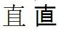

Intended audience: Веб-розробники, програмісти, адміністратори сайтів, та інші бажаючі перевести Веб сайт або Веб контент із застарілого (non-Unicode) кодування символів на Unicode.
Ця стаття дає рекомендації з переходу програмного забезпечення і даних в Unicode. Вона охоплює планування переходу, та проектування і примінення програмного забезпечення Unicode. Передбачається загальне уявлення про Unicode та принципи кодування символів. Деякі джерела інформації про це включають в себе:
Є кілька причин для прийняття Unicode:
Зверніть увагу, що простою зміною кодування символів ваших сторінок на Unicode ви не усуните всіх проблем із кодуванням символів. Насправді, під час переходу існує значно підвищений ризик таких помилок, тому що існуючі дані повинні бути перетворені в Unicode, а поточне кодування не завжди відоме. Цей документ містить поради, як мінімізувати цей ризик і як забезпечити механізми виправлення проблем перекодування.
Для можливості переходу на Unicode, ви повинні розуміти, використання кодувань символів у ваших поточних настройках і прийняти рішення про внутрішнє і зовнішнє використання кодувань символів для дизайну основаного на Unicode. Вам також потрібно знати стан Unicode підтримки в програмних компонентах, на яку ви можете покластися і в разі необхідності, спланувати перехід для цих компонентів. Це дозволяє вам, планувати оновлення вашого програмного забезпечення, що повинно базуватися на основі Unicode та перетворення існуючих даних в Unicode кодування.
Проект переходу на Unicode може бути також хорошим, щоб поліпшити інтернаціоналізацію в цілому. Зокрема, необхідно розглянути питання чи можете ви використовувати багатомовні можливості Unicode, щоб подолати непотрібні бар'єри між різними аудиторіями, культурами чи мовами. Особливо для сайтів або програм, які дозволяють спілкування між користувачами і, таким чином приймати або передавати контент, що створений користувачами, є сенс створити один сайт із загальним багатомовним контентом не дивлячись на кілька локалізованих користувальницьких інтерфейсів.
Для початку, ви повинні добре розуміти як кодування символів використовуються у вашому програмному забезпеченні. Визначати компоненти програмного забезпечення і вмістилища даних: передня частина, задня частина, вмістилище, APIs(прикладні програмні інтерфейси), веб інтерфейси, і так далі, і з'ясувати їх використання в кодуваннях:
Останнє питання може здатися дивним, але воно особливо важливе. Відсутність достовірної інформації про кодування символів, яке використовується для тексту, який надходить ззовні сайту (такого, як канали контенту або дані введені користувачем) або, або, той, що вже у ваших колекціях даних є спільною проблемою та потребує особливої уваги. (Насправді, вам потрібно звернути увагу на ці речі, навіть якщо ви не перетворюєте дані в Unicode.) Існують різні випадки, коли може відбутися ця відсутність правильної інформації:
Щоб справитися з такими ситуаціями, зазвичай використовується виявлення кодування символів. Спроби виявлення кодування використовуються в послідовності байтів основаній на характеристиках самої послідовності байтів. У більшості випадків це статистичний процес, який для хорошої роботи потребує довгих вхідних послідовностей байтів, хоча ви зможете поліпшити її точність при використанні іншої доступної для вашого додатку інформації. Через високу ймовірність помилок, для людей часто необхідно передбачати способи їх виявлення і виправлення. Це потребує доступності оригінальної послідовності байтів для подальшої реконверсії. Приклади бібліотек визначення кодування включають в себе:
Реалізація програмного забезпечення часто залежить від іншого програмного забезпечення:
Ви повинні перевірити, чи програмне забезпечення від якого ви залежите підтримує Unicode, чи принаймні не ставить вам перешкод у його прийнятті. Це звичайно буде необхідним для поновлення на нові версії базових платформ, і в деяких випадках потрібно буде перейти із застарілих платформ на нові.
Unicode пропонує три форми кодування: UTF-8, UTF-16, та UTF-32. Зазвичай для переміщення по мережі або для збереження у файлах кодування UTF-8 працює найкраще тому, що воно сумісне з ASCII, тоді як схожі на ASCII байти, що містяться в UTF-16 та UTF-32 тексті - це проблема для деяких мережевих пристроїв або інструментів обробки файлів. Для обробки в пам'яті, всі три форми кодування можуть бути корисними, і найкращий вибір часто залежить від програмних платформ і бібліотек, які ви використовуєте: Java, JavaScript, ICU, і більшість Windows APIs (прикладні програмні інтерфейси) базуються на основі UTF-16, в той час як Unix системи, як правило, віддають перевагу UTF-8. Розмір даних, що зберігаються рідко стає фактором при прийнятті рішення між UTF-8 і UTF-16, оскільки обидва можуть мати кращий розмір профілю, в залежності від поєднання розмітки і Європейських чи Азіатських мов. UTF-32 є неефективним для зберігання і, отже, рідко використовується з цією метою, але воно дуже зручне для обробки, і деякі бібліотеки, такі як Java та ICU, забезпечили рядок доступу та обробки API (прикладні програмні інтерфейси) з точки зору UTF-32 code points (місця коду). Перетворення між трьома формами кодування швидке і безпечне, так що використання різних форм кодування в різних компонентах великих програмних систем цілком реальне і поширене.
Із впевненістю можна сказати, що зберігання тексту, кодування якого не відоме є виключенням із єдиного правила Unicode. Такий текст часто потрібно інтерпретувати використовуючи технологію розпізнавання кодування символів. І виявлення кодування символів не надійний процес. Таким чином, ви повинні поблизу тримати оригінальні байти (поряд з виявленим кодуванням символів), так щоб текст можна було повторно перетворити, коли людина змінить кодування.
Для взаємодії вашої програми із зовнішнім світом, UTF-8 потрібно використовувати скрізь, де це можливо. Однак є ситуації, коли ви не можете контролювати кодування або потребуєте взаємодії з системами, які не підтримують UTF-8. Ось рекомендації для поширених випадків:
Електронна пошта: Ви повинні приймати вхідні листи в будь-якому кодуванні, що використовує ваша електронна пошта. Для вихідної пошти, вам, можливо, доведеться взяти до уваги, що багато старих програми електронної пошти не підтримують UTF-8. В даний час, вихідна пошта повинна бути перетворена в застаріле кодування, яке може відобразити її весь контент; UTF-8 треба використовувати лише тоді, коли не можна знайти таке застаріле кодування. Кодування вихідної пошти повинне бути вказане. Які вихідні кодування використовувати залежить від потреб вашої програми.
URIs та POST дані: Вони використовуються в кількох різних контекстах: форма подання, веб-сервіси, або URL-адреси, введені безпосередньо в веб-браузері. Для форми подання, HTML форма повинна бути розроблена з можливістю виявлення кодування символів, навіть якщо користувач змінить його в браузері. (Ви можете використовувати JavaScript або спеціальні значення полів, щоб визначити, чи змінив користувач кодування: можливо, ви повинні м'яко нагадувати користувачеві не робити цього?)
Веб служби: Веб служби (Особливо Веб служби основані на REST (передача стану подання)) повинні визначати використання UTF-8 і відкидати запити, які не дійсні для UTF-8. Для сторонніх веб сервісів, використовуйте UTF-8, якщо ця функція підтримується веб сервісом та переконайтесь в правильній ідентифікації використовуваного кодування. Для URIs (Уніфікований Ідентифікатор Ресурсів) кодування вводиться безпосередньо у веб браузері (наприклад, маркетингові URIs), інші кодування можливо потребують підтримки.
HTML: При подачі сторінок на настільні браузери, використовуйте кодування UTF-8; його підтримка зараз
є майже універсальною. Мобільні браузери не завжди підтримують UTF-8, так що ви можете
використовувати застарілі кодування в залежності від цільового пристрою.
Кодування, яке використовується повинне бути призначене з використанням HTTP: заголовок Content-Type, HTML meta тег, або (переважно) обидва. Якщо ви не можете контролювати
конфігурацію вашого сервера, на рівні файлів або запитів або не можете налаштувати
його для подання UTF-8 в якості кодування, тоді переконайтесь, що він взагалі
не відправляє кодування: користувацькі додатки звертають увагу на це кодування
перед тим як щось призначити в meta тег. Правильний HTML meta тег:
<meta http-equiv="Content-Type" content="text/html;charset=utf-8">
Як встановити HTTP Content-Type заголовок залежить від вашого середовища
виконання. Наприклад, в PHP, ви повинні використовувати:
<?php header("Content-type: text/html; charset=UTF-8"); ?>.
Дивіться докладнішу інформацію на сторінці установка content-type.
Якщо ви взяли контент за межами вашого сайту (наприклад, веб-павук пошукової системи або зовнішній HTML), то вам доведеться мати справу з будь-яким кодуванням. У деяких випадка це означає прийняття та обробку кодування, що використовується. Якщо ви включите той матеріал у свої власні сторінки, то ви повинні будете зробити кодування відповідним до вашої сторінки (або покласти його в тег iframe, де він може використовувати своє оригінальне кодування).
XML:Вихідні XML завжди повинні бути закодовані в UTF-8; XML специфікація потребує, щоб кожен XML аналізатор розумів це. Для джерел даних XML, вкажіть використання UTF-8. В інших випадках, XML файли закодовані в інших кодуваннях повинні бути прийняті до тих пір, поки вони дійсні. Зверніть увагу, що HTTP Content-Type text/XML за замовчуванням US-ASCII (із цього приводу, як правило, віддається перевага application/xml+*) і вам все одно потрібно вказати charset (набір символів), якщо ви використовуєте text/xml Content-Type.
JSON: Вихідні дані JSON завжди повинні бути закодовані в UTF-8, і бажано в ASCII із екранованими символами \u для всіх відмінних від ASCII символів. Для вхідних даних, може бути також розглянута підтримка UTF-16 і UTF-32. Специфікація JSON не дозволяє будь-яких інших кодувань.
Серіалізована PHP: Цей формат даних, слід уникати, оскільки він не дозволяє специфікацію кодування, що використовується, і тому, ймовірно, може привести до пошкодження даних відмінного від ASCII тексту. JSON є гарною альтернативою. Якщо ви абсолютно не можете уникнути серіалізованої PHP, то вкажіть кодування UTF-8 і використовуйте його.
Інші канали даних: Там де ви можете впливати на кодування вхідних каналів даних, воно повинно бути UTF-8, або принаймні добре визначеним. Там можуть бути випадки, коли ви хочете використовувати канали даних, які ви не можете контролювати, в такому випадку вам доведеться використовувати все, що ви отримаєте.
Як правило, вхідний текст повинен бути перетворений в кодування Unicode якомога швидше, а вихідний текст, якщо він повинен бути відправлений у кодуванні відмінному від Unicode, треба перетворити з Unicode кодування в те інше кодування якомога пізніше. Однак, якщо кодування вхідного тексту достовірно не можна визначити, тоді оригінальний текст повинен бути збережений разом з інформацією про ймовірне кодування. Це дозволяє коригувати свої дії, якщо виявиться що було обране неправильне кодування.
Для дуже простих сайтів або програм можна змінити все програмне забезпечення, так щоб воно грунтувалося на основі Unicode, перевести всі дані в Unicode кодування, і в одну мить перемикати із попередньої версії на Unicode версію. Але багато сайтів або програм пропонують зовнішні інтерфейси, мають великі тіла коду і накопичили величезні масиви даних, тому їх перетворення - великий проект з декількома залежностями, який повинен бути ретельно спланований. Ось розбивка на ймовірні підпроекти:
Перетворення ваших баз даних та/або сховищ даних в Unicode. Якщо бази даних були доступні іншим продуктам, можливо вам доведеться чекати, поки ті продукти перейдуть на APIs, які були представлені в першому кроці. Розділ Передача даних містить більше інформації про цей крок.
Деякі з цих підпроектів можуть виконуватися паралельно або в іншому порядку, залежно від конкретної ситуації вашого продукту. Наприклад, перехід реалізації вашого продукту може затриматися в залежності від інших програмних компонентів, які ще досі не достатньо просунулися в процесі їх переходу. З іншого боку бази даних SQL можна перетворити в Unicode набагато раніше, тому що клієнтський компонент програмного забезпечення бази даних ізолює клієнтів від кодування, що використовується в базі даних і здійснює перетворення кодування символів у разі потреби. Перетворення баз даних на ранній стадії має свої переваги: воно спрощує тестування, тому що базу даних можна протестувати незалежно від програмного забезпечення, що її використовує, під час тестування програмного забезпечення більш високого рівня як правило, необхідна база даних, і використовуючи застарілі кодування ви зможете об'єднати декілька окремих баз даних в одну багатомовну базу даних.
Послідовність байтів може бути правильно інтерпретована як текст тільки, якщо кодування символів відоме. Багато додатків написані так, що вони просто переміщають послідовності байтів, не називаючи кодування символів. Як вже вище було сказано це завжди викликає проблеми. Але це трапляється у випадках, коли всі користувачі спілкуються однією мовою або готові адаптуватися до деякого неправильно зробленого контенту на сторінці. У процесі переходу на Unicode, кожна мова буде оброблятися як мінімум в двох кодуваннях, застаріле кодування для мови та UTF-8, так що зазначення кодування для кожної послідовності байтів буде мати вирішальне значення для того, щоб уникнути лавини помилок пошкодження даних.
Кодування символів можна задати різними шляхами:
У специфікації формату: специфікація для формату даних може вказати кодування символів або напряму, або вказати простий детермінований механізм для визначення кодування символів дивлячись на початок послідовності байтів. Прикладами є специфікація Java String class, яка визначає UTF-16, та специфікація JSON, яка приписує використання Unicode кодувань і як їх розрізняти.
У рамках послідовності байтів: Специфікація
для формату даних може передбачати механізм для вказівки
кодування символів як частини послідовності байтів. XML
специфікація робить це в елегантний спосіб використовуючи призначення
кодування, HTML специфікація робить це в менш елегантний спосіб використовуючи meta тег. Для форматів даних, які дозволяють таку специфікацію, дані можуть містити
специфікацію кодування, якщо тільки послідовність байтів в кодуванні - UTF-8 та
специфікація забезпечує правильне виявлення UTF-8 (як для XML). Для HTML
файлів meta тег вказує content type
та кодування символів повинно бути першою підкатегорією елементу head , і перед ним не мають стояти символи відмінні від
ASCII.
У даних, що є зовнішніми по відношенню до послідовності байтів:
У багатьох випадках, вмістилище послідовності байтів забезпечує специфікацію
кодування. Кілька прикладів будуть включати в себе HTTP або MIME, де поле Content-Type заголовок може вказати кодування і бази даних, де
кодування вказане як частина схеми або конфігурації
бази даних. Знову ж таки, де такі можливості існують, текстові дані повинні
використовувати їх. У деяких випадках, таких як відправка HTML через HTTP
зовнішня специфікація кодування може дублювати те, що є частиною послідовності
байтів - це добре, тому що веб браузери віддають перевагу
заголовку HTTP, в той час як meta тег - єдина
специфікація, яка зберігається при збереженні файлу на диск.
У специфікаціях інтерфейсу: Специфікації інтерфейсів, які приймають або повертають послідовності байтів без будь-яких специфікацій кодування символів можуть (і повинні) вказувати використовуване кодування символів. Специфікація може бути абсолютною або відносною по відношенню до середовища установки. Наприклад, деякі бібліотеки надають функції, які приймають або повертають рядки в UTF-8, в той час як інші приймають або повертають рядки закодованими в деякі застарілі кодування.
У контексті: кодування символів можна вивести із контексту в якому зустрічається послідовність байтів. Наприклад, браузери звичайно відправляють дані форми в кодуванні символів, яке використовує сторінка, що містить цю форму. Це дуже слабка форма специфікації тому що послідовність байтів часто передається з контексту, наприклад, в log файли, де кодування вже не можна змінити. Крім того, користувачі іноді міняють кодування браузера так, що кодування даних форми, що повертається не буде відповідати кодуванню сторінки, створеної веб-додатком. Використання UTF-8 є одним із способів звести до мінімума шкоду від цієї слабкої форми специфікації кодування тому що усуває необхідність користувачам змінювати кодування браузера і тому для UTF-8 виявлення кодування символів працює краще ніж для більшості інших кодувань.
Існує стандарт для назв кодування символів в інтернеті, RFC 2978, та пов'язаний реєстр IANA charset. Однак фактичне використання часто відрізняється. Багато кодувань приходять в різних варіантах або мають сестринські кодування, які підтримують розширені набори символів, та різне програмне забезпечення, яке часто використовує різні назви для одного і того ж кодування або ту саму назву для різних кодувань. Наприклад, назва ISO-8859-1 часто використовується для опису даних, які насправді використовують кодування windows-1252. Це останнє кодування (Microsoft Windows code page 1252) дуже схоже на кодування ISO 8859-1, але призначає графічні символи до діапазону байтів між 0x80 та 0x9F. Багато веб-додатків (таких як браузери, пошукові системи, і т.д.) відносяться до контенту відміченого, як ISO 8859-1, як до такого, що використовує кодування windows-1252 тому, що для всіх практичних цілей, windows-1252 є "розширенням" ISO 8859-1. Інші програми, такі як перетворювачі кодування (наприклад, iconv або ICU) досить буквальні і ви повинні вказати правильну назву кодування, щоб отримати правильні результати.
Всякий раз, коли послідовність байтів інтерпретується як текст і обробляється, її кодування символів має бути відомим. У багатьох випадках визначення кодування символів настільки тривіальне, що про це навіть не задумуються - наприклад, коли обробляється рядок у мові програмування, яка вказує, що рядки закодованні в UTF-16. Однак в інших випадках, немає чіткої специфікації чи доступне кодування символів, або текст, приходить від джерела, якому не можна повністю довіряти, щоб забезпечити правильну специфікацію. У таких випадках більш складний процес, потребує визначення кодування символів і пізніше потрібно включити виправлення зроблених помилок:
При відправці тексту, вибір відповідного кодування символів повинен базуватися на основі формату даних та одержувача. Розділ Прийняття Рішення про Використання Кодування Символів для Зовнішніх Інтерфейсів обговорює використання кодування на основі форматів даних. У більшості випадків рекомендується Unicode кодування. Однак, є два основних винятки:
Електронна пошта: Багато старих програми електронної пошти не підтримують UTF-8. В даний час, електронна пошта повинна перетворюватися в застаріле кодування, яке може представити весь її контент; UTF-8 слід використовувати тільки тоді, коли не можливо знайти таке застаріле кодування.
Мобільні браузери: Мобільні системи не завжди підтримують UTF-8. Тому можливо необхідно буде вибрати інші кодування на основі конкретного пристрою.
Незалежно від того, яке кодування використовується, кодування символів однозначно треба вказувати, використовуючи один з механізмів, описаних в розділі Специфікації Кодувань Символів.
Перекодування потрібно завжди, коли текст очікується в одному кодуванні символів в одному місці та в іншому кодуванні символів у наступному місці. ICU та iconv - часто використовувані бібліотеки для перетворення кодування символів, однак, деякі платформи, такі як Java і Perl, надають свої бібліотеки перетворення.
При використанні бібліотек, важливо використовувати правильні назви кодування для конкретної бібліотеки. Для більш детальної інформації дивіться розділ Назви Кодування Символів.
Є деякі конкретні питання щодо перетворення, які можуть вплинути на певні продукти:
Символи приватного використання: Кілька кодувань символів, включаючи Unicode і більшість кодувань Східної Азії, мають діапазони code point (місце коду), які зарезервовані для приватного використання або просто не визначені. Вони часто використовуються для символів конкретного або приватного використання — emoji встановлена Японськими операторами мобільного зв'язку є прикладом. Стандартні перетворювачі символів не знають як відобразити такі символи. Для додатків, де підтримка символів приватного використання є критичною, щоб забезпечити правильне відображення вам краще використовувати звичайні перетворювачі символів або використовувати обхідні шляхи, такі як numeric character references (числові посилання).
Версії кодувань символів і відображень: Багато кодувань символів змінювалися з плином часу, і тому співставте їх. Прикладом може служити відображення з HKSCS в Unicode: Ранні версії HKSCS мали відображати числові символи в області приватного використання Unicode, бо Unicode не підтримував їх, але пізніше ці символи додали до набору символів Unicode, і відображення із HKSCS були змінені, щоб відобразити нові додані символи. Взагалі, ви повинні переконатися, що ви використовуєте останні версії перетворювачів символів.
В Unicode деякі символи можна представити більш ніж в один спосіб. Unicode визначає кілька шляхів усунення цих відмінностей, коли вони не мають значення для обробки тексту. Для отримання додаткової інформації про Нормалізацію, дивіться CharMod-Norm.
Unicode не наказує, коли використовувати конкретну форму Unicode нормалізації. Тим не менш, цілий ряд процесів, працює краще, якщо текст нормований, в окремих процесах, які містять в собі порівняння тексту, таких як сортування, пошук та обробка regular expression (регулярний вислів). Деякі бібліотеки виконуючи ці процеси пропонують нормалізацію в якості частини процесу; в іншому випадку, перш ніж використовувати ці процеси ви повинні переконатися, що текст нормований. Як правило, нормалізаційна форма C (NFC) рекомендована для веб-додатків. Тим не менш, деякі процеси, такі як інтернаціоналізовані доменні імена, використовують інші нормалізаційні форми.
Деякі мови потребують нормалізації перед обробкою, оскільки різні методи введення можуть генерувати різні послідовності codepoints (місце коду) Unicode. В'єтнамська мова є яскравим прикладом, де в'єтнамська розкладка клавіатури починаючи із Windows 2000 і вище виробляє послідовності символів, які відрізняються від, тих що виробляє більшість В'єтнамського програмного забезпечення для введення даних. Аналогічні питання виникають у ряді Африканських мов, перша, що спадає на думку - Йоруба.
Зберігання тексту в Unicode часто займає більше місця, ніж збереження його в застарілих кодуваннях. Точне значення зайнятого простору залежить від мови і конкретного тексту. Простір для деяких поширених кодувань може бути:
Джерело Кодування |
Мови |
UTF-8 |
UTF-16 |
| ASCII | Англійська, Малайська, ... | 0% | 100% |
| ISO-8859-1 | Західноєвропейські | 10% | 100% |
| ISO-8859-7, звичайний текст | Грецька | 90% | 100% |
| ISO-8859-7, 50% розмітка | Грецька | 45% | 100% |
| TIS-620, звичайний текст | Тайська | 190% | 100% |
| TIS-620, 50% розмітка | Тайська | 95% | 100% |
| EUC-KR, звичайний текст | Корейська | 50% | 5% |
| EUC-KR, 50% розмітка | Корейська | 25% | 55% |
На макрорівні це насправді не має великого значення. В даний час пропускна спроможність та вмістилище мережі зайняті відео, зображенням та звуковими файлами, а текст споживає тільки частку. Там може бути вплив на системи зберігання даних, що зберігають тільки текст. Якщо вас насправді бентежить розмір тексту, то його можна зменшити використовуючи стиснення.
Однак на мікрорівні, збільшення розміру вмістилища має ряд наслідків:
Для роботи з Unicode, часто вигідніше використовувати програмні бібліотеки , які призначені для підтримки Unicode. Старі бібліотеки можуть не так добре підтримувати Unicode , або взагалі не підтримувати.
Хоча Unicode дозволяє багатомовні програми і документи, є багато процесів, які вимагають знання про використання фактичної мови. Такі процеси варіюються від простого складання до пошуку та перевірки правопису.
APIs, що базуються на основі Unicode мають дозволяти специфікацію мови (мов), що використовується там де тільки такі знання можуть знадобитися і мова контенту створеного користувачами повинна бути записана там де це можливо. Там де не можна визначити мову в ресурсі, може знадобитися бібліотека визначення мови.
Щоб допомогти іншим програмам, мову веб-контенту,
потрібно призначати з використанням HTTP заголовку Content-Language або HTML/XML атрибутів lang.
При заданні шрифтів веб сайти, що використовують Unicode повинні бути більш обережні ніж веб сайти, що використовують застарілі кодування. Багато мов мають унікальні або специфічні писемні традиції, навіть якщо вони поділяють скрипт з іншими мовами. В інших випадках, підтримка шрифтів може бути перешкодою, тому що шрифти необхідні для відображення певних скриптів не встановлені на більшості систем.
Наприклад, Китайські і Японські системи письма мають велику кількість символів, але мають різні друкарські традиції, так що Китайські шрифти, як правило, не прийнятні для тексту Японською мовою, і навпаки. Наприклад, є той самий символ, відображений за допомогою Китайського і Японського шрифта (разом із HTML кодом, що використовується для створення знімка екрана):

<span style="font-size:3em;font-family:sans-serif;">
<span lang="zh-Hans-CN" style="font-family: simsun, hei,
sans-serif;">з›直</span>
<span lang="ja" style="font-family: 'ms gothic',
osaka;">з›直</span>
</span>
Коли використовуються застарілі кодування браузери часто вгадують мову із кодування і вибирають відповідний шрифт.
Оскільки Unicode підтримує як Китайську так і Японську мови, цей прийом не працює для сторінок, закодованих в Unicode, а результатом може бути недоречний шрифт або навіть неладне поєднання шрифтів, що використовуються для відображення контенту.
Одне з рішень - слідкувати за мовою, що використовується, і
передати браузеру мову і шрифти, що використовуються для
мови. Для одномовних сторінок простий і ефективний підхід - використання для мови
спеціальної таблиці стилів. Для багатомовних сторінок, ви повинні використовувати
атрибут lang HTML тегів для визначення мови; кілька браузерів
використовують цю інформацію для вибору правильного шрифту. Для точного
контролю над шрифтом ви також можете використовувати класи для визначення мови та
клас селекторів в таблиці стилів, щоб встановити шрифт. CSS 2.1 селектори
псевдо класу мови, які будуть вибирати безпосередньо на основі атрибуту(ів)
мови, не підтримуються Internet Explorer і тому мають обмежену корисність.
Дивіться Результати тестування: Залежний від мови стайлінг.
Перетворення даних, пов'язаних з продуктом, у багатьох випадках може бути найбільшою проблемою в переході продукту в Unicode. Наприклад, деякі програми володіють або мають доступ до ряду баз даних, деякі з яких управляються такими двигунами баз даних як Oracle або MySQL. Інші використовують власні формати файла і механізми доступу. Ці бази даних, незалежно від типу необхідно перенести для підтримки Unicode.
При перенесенні даних в Unicode добре було б об'єднати бази даних, що були раніше окремими через різні кодування символів. Використання єдиної бази даних по всьому світу або тільки декількох для основних регіонів може спростити розгортання і обслуговування, і може дозволити обмін контентом між різними ринками, і Unicode ідеально підходить для цього оскільки він може представляти текст на всіх мовах. Однак при об'єднанні ви повинні мати на увазі, що інші обмеження пов'язані з розподілом контенту можуть залишатися: доступність мови, умови ліцензування, а також юридичні або культурні обмеження на публікацію матеріалів, пов'язаних із політикою, релігією, статтю і насильством.
Стратегії для перетворення даних будуть змінюватися в залежності від ряду факторів:
Через варіації в цих факторах не існує простого рецепту, якого необхідно дотримуватися при перетворенні бази даних продукту. Нижче обговорення загальних міркувань; однак, як правило, необхідно створити план конверсії з урахуваннями для кожного продукту. Такий план, швидше за все, матиме кілька фаз для аналізу і перетворення з перевіркою результатів перетворення, і відновленням, якщо щось піде не так.
Як уже згадувалося в Питання щодо Розміру Тексту (вище), перетворення тексту в Unicode, як правило, відбувається за вимог розширеного вмістилища, і ви повинні ретельно розглянути питання про доцільність вимірювання довжини тексту в байтах, символах або UTF-16 code units (елементи коду). Щоб зменшити вплив збільшених розмірів поля перемкніть CHAR поля в базах даних SQL на VARCHAR, що дозволить базі даних виділити стільки простору скільки необхідно.
При вимірюванні тексту, деякі бази даних не дають вам вибору. Наприклад, MySQL завжди вимірює з точки зору Unicode BMP символів, в результаті чого виходить 3 байти на символ. Інші, такі як Oracle, дозволяють вибирати між семантикою символа або байта. Інші системи зберігання даних, які накладають обмеження на розмір швидше за все вимірюють в байтах.
Під час перенесення, яке включає в себе перекодування, будьте обережні, щоб уникнути скорочення. У деяких випадках, на жаль, ви не зможете це зробити, через такі зовнішні обмеження, як 30 байтний ліміт в Oracle для схеми імен об'єктів у словниках даних (використання символів ASCII для схеми імен допомагає уникнути цієї проблеми). В таких вападках, принаймні переконайтесь, у скороченні в межі символу.
Крім того: зверніть увагу, що можуть бути розширення тексту за рахунок перекладу. Дивіться Розмір тексту в перекладі.
Варто визначати набори даних (файли, таблиці бази даних, стовпчики бази даних), які повністю закодовані в ASCII. Якщо потрібне Unicode кодування - UTF-8, то для таких наборів даних перетворення не потрібно, оскільки послідовності байтів ASCII ідентичні відповідним послідовностям байтів UTF-8. Крім того, індекси над ASCII текстовими полями справедливі і для відповідних UTF-8 або UTF-16 текстових полів, якщо тільки вони не базуються на порядку сортування чутливому до мови. Тим не менше, ви повинні бути строгими у визначенні ASCII наборів даних. Термін "ASCII" часто помилково використовується для таких речей, які не є ASCII, такі як звичайний текст (в будь-якому кодуванні) або текст в таких кодуваннях, як ISO 8859-1 або Windows-1252. Крім того, ряд кодувань символів був розроблений, щоб вписатися в 7-бітні послідовності байтів, представляючи абсолютно різні набори символів із ASCII.
Щоб переконатися, що набір даних дійсно знаходиться в ASCII, перевірте наступне:
Не використовуються такі значення байтів, як 0x0E, 0x0F, та 0x1B. Присутність цих значень байтів, швидше за все, вказує, що дані насправді закодовані в кодуванні ISO-2022.
Якщо символи "+" та "-" зустрічаються, то проміжні байти не дійсні для BASE-64. Якщо вони є, то не виключено, що текст закодований в кодуванні UTF-7. Зверніть увагу, що UTF-7 по можливості треба уникати через потенціальну загрозу XSS атак.
Такі послідовності символів, як "~{" та "~}" не зустрічаються. Якщо ви їх зустріли, то текст, ймовірно, закодований в кодуванні HZ.
Як згадувалося раніше, іноді трапляється, що бази даних містять текст кодування якого не відоме. Виявлення кодування символів можна використати для отримання уявлення про кодування, але цей процес не є надійним. Щоб справитися з невизначеністю, необхідно виконати ряд додаткових кроків:
Для простоти, наступні розділи передбачають, що кодування може бути точно визначено і, отже, перетворення є одноразовим заходом. Там де це не так, стратегії повинні бути скоректовані.
Бази даних зберігаючи створений користувачами контент, часто містять числові посилання (NCRs) на введені користувачами символи відмінні від ASCII такі, як "Œ" (Œ) або "€" (€). Багато браузерів створюють NCRs тоді, коли користувачі вводять текст в поля форми, які не можуть бути виражені у кодуванні символів форми. NCRs відмінно працюють, якщо текст згодом перепоказаний в HTML. Однак, для інших процесів, вони не працюють тому, що вони не збігаються із текстом, який вони представляють в пошуку, вони сортуються в неправильному місці, або вони ігноруються разі перетворення. При переході на Unicode також було б добре перетворити NCRs у відповідні символи Unicode. Однак, ви повинні бути обережні, щоб уникнути перетворень, які змінюють значення тексту (перетворення із "&" в "&") або перетворення в текст який буде відфільтрований з міркувань безпеки.
Під час переходу із застарілих кодувань в Unicode, прийнято використовувати застарілі кодування та Unicode паралельно, і ви повинні розрізняти їх. У загальному випадку, це вимагає специфікацій кодування символів. Проте, якщо вам потрібно відрізнити тільки одне певне застаріле кодування (наприклад, старе кодування сайту за замовчуванням) і UTF-8, ви можете використовувати Unicode Маркер Порядку Байтів (BOM) в якості префікса для ідентифікації рядків UTF-8. Це особливо зручно, якщо немає застереження про специфікацію кодування символів, наприклад, в звичайних текстових файлах або в cookies (куки). BOM в UTF-8 - послідовність байтів 0xEF 0xBB 0xBF, яка б навряд чи знадобилася б в будь-якому застарілому кодуванні.
Зчитувач даних, який ідентифікує їх кодування, таким чином, для визначення кодування читає перші три байти. Якщо байти відповідають BOM, то три байти зачищаються і контент, що залишився повертається як UTF-8. Якщо байти не відповідають BOM, то весь контент перетворюється із застарілого кодування в UTF-8. Однак, ця зачистка не є автоматичною, і це впливає на деякі платформи або мови. Наприклад, PHP файл, який починається з BOM буде витлумачений неправильно PHP процесором. Так що цей трюк краще обмежити і використовувати для відомих частин вашого сайту або коду.
Звичайні текстові файли, які використовують одне кодування легко перетворити. Наприклад, інструмент iconv доступний на більшості систем основаних на Unix/Linux. У системах, які не мають його, зручно встановити Java Development Kit і використовувати його інструмент native2ascii:
native2ascii -encoding _''sourceencoding'' ''sourcefile'' |
native2ascii -reverse -encoding ''targetencoding'' >
''targetfile''Для невеликої кількості файлів, також можна використати редактори: TextPad на Windows, TextEdit на Mac, або jEdit на будь-якій платформі, є лише декілька редакторів, які можуть перетворювати файли. Зауважимо, що деякі редактори такі, як Notepad (Блокнот), люблять приставляти Unicode byte-order mark (BOM) спереду Unicode файлів, що у випадку UTF-8 файлів не є необхідними і може викликати проблеми з програмним забезпеченням, при читанні файлів.
Структуровані файли в даному контексті - будь-які файли, окрім баз даних SQL, які мають компоненти, що можуть мати різні кодування або що мають обмежену довжину. Приклади: log files (файли журналу), в яких різні записи можуть використовувати різні кодування; повідомлення електронної пошти, де різні заголовки і MIME компоненти можуть використовувати різні кодування, і заголовки мають обмежену довжину; і cookies (куки), які часто розглядаються, як такі, що мають кілька полів. Для таких файлів, кожен компонент повинен бути перетворений окремо, і обмеження довжини мають розглядатися окремо для кожного компонента.
База даних SQL насправді складається з двох компонентів: компонент сервера, який фактично керує даними, а також клієнтський компонент, який взаємодіє з іншим програмним забезпеченням (наприклад, PHP або Java runtime) і взаємодіє з компонентами сервера. Кодування символів, яке клієнт використовує для зв'язку із сервером можна встановити окремо від кодування символів, яке використовує сервер; сервер перетворить його в разі необхідності.
Залежно від розміру бази даних та її вимог до безвідмовної роботи, доступні різні стратегії для перетворення:
Мова і документація SQL мають погану звичку використовувати термін "character set" (набір символів) для кодувань символів, ігноруючи той факт, що UTF-8 та UTF-16 (і навіть GB18030) є різними кодуваннями одного й того ж набору символів.
Oracle має загальну підтримку Unicode, починаючи з 8-ї версії,
але підтримка додаткових символів доступна тільки починаючи з
версії 9r2, і підтримка Unicode 3.2 тільки починаючи з 10-ї версії. Також до 9-ї версії
трохи важко використовувати такі типи даних, як NCHAR та NVARCHAR.
Oracle забезпечує всебічну підтримку Globalization Support Guides (Керівництво Підтримки Глобалізації) для таких
версій: 9r1, 9r2, 10r1,
та 10r2.
Особливо актуальні розділи з питань Character Set Migration (Перехід) та
Character Set Scanner (Сканер).
Кодування символів обране для бази даних Oracle встановлюється для
всієї бази даних, включаючи дані, схеми і запити, з одним винятком: NCHAR та NVARCHAR типи
завжди використовують Unicode. Для бази даних пропонуються різні Unicode кодування,
як для цілої бази так і для таких типів даних як NCHAR та NVARCHAR. Для бази даних правильними є
UTF-8 під назвою AL32UTF8, та варіант UTF8, який кодує додаткові символи у вигляді двох 3-байтних
послідовностей. Для переходу баз даних в Unicode, ви маєте використовувати AL32UTF8 (бази даних, які вже використовують UTF8 в більшості випадків можуть продовжують це робити - різниця
між цими кодуваннями може вплинути на параметри сортування та індексації в
базі даних, але в цілому це не має великого значення, так як клієнтський інтерфейс
перетворює UTF8 щоб виправити UTF-8). Для таких типів даних, як NCHAR та NVARCHAR UTF-16 доступний під назвою AL32UTF8, поряд
з варіантом кодування UTF8. Семантику
специфікацій довжини для таких типів даних, як CHAR, VARCHAR2, та LONG можна
встановити використовуючи NLS_LENGTH_SEMANTICS, із
байтовою семантикою за замовчуванням, у той час, як типи даних NCHAR та NVARCHAR завжди використовують символьну семантику.
Для правильного перетворення між кодуванням(и), що використовується в межах бази даних в
кодуванні клієнта дуже важливо визначити NLS_LANG змінне середовище на стороні клієнта. Ця
змінна описує мову, територію, і кодування, що використовується клієнтською
операційною системою. Oracle має безліч інших параметрів, щоб вказати в базі даних чутливу до
локалі поведінку; вони взагалі можуть бути встановлені окремо від кодування
до тих пір поки кодування може представляти символи вибраної локалі.
Unicode підтримує всі мовні стандарти (локалі).
Oracle забезпечує вбудовану підтримку для кількох стратегій перетворення.
Інструмент Character Set Scanner допомагає у виявленні можливого перетворення і
скороченні проблем в аналізі попереднього перетворення. Утиліти експорту та імпорту
допомагають у виконанні дампа і перезавантаженні стратегії. Додавати Unicode
стовпчики легко, тому що NCHAR та NVARCHAR типи даних підтримують Unicode незалежно від
кодування бази даних. Перетворення на місці з тегом кодуванням можливе, якщо
сама база даних не розтлумачить текст - ALTER
DATABASE CHARSET заява може бути використана для того, щоб інформувати базу даних про
фактичне кодування коли перетворення буде завершено.
Є повідомлення, що NCHAR типи даних не
підтримуються в PHP Oracle Call Interface.
Щоб отримати підтримку Unicode в базах даних MySQL, ви повинні використовувати версію MySQL 4.1 або вищу. Для отримання інформації про перехід на цю версію і про можливі проблеми сумісності дивіться Оновлення Character Sets із MySQL 4.0. Детальну інформацію про підтримку кодування символів в MySQL, дивіться в розділі документації MySQL Підтримка Character Set. Кодування символів для контенту бази даних можна встанови окремо на рівні сервера, бази даних, таблиці або стовпця. Якщо кодування явно не задане, то воно успадковується від наступного більш високого рівня.
Кодуванням за умовчанням в MySQL є latin1, а саме, ISO-8859-1. Unicode кодування,
які підтримуються називаються utf8 та ucs2. Зазвичай рекомендованим
кодуванням для MySQL має бути utf8. Обидва utf8 та ucs2 обмежені для
символів Unicode Basic Multilingual Plane (BMP), так що немає
ніякої підтримки для додаткових символів у MySQL. В результаті utf8 не є
повністю сумісною реалізацією UTF-8 (хоча для більшості випадків це
нормально). Такі типи даних, як NCHAR та NVARCHAR завжди використовують utf8.
Специфікації довжини для символьних типів даних
інтерпретовані до Unicode BMP символів, так специфікація CHAR(5) CHARACTER SET utf8 зарезервує 15 байтів. Такі meta дані
як імена користувачів, завжди зберігаються в UTF-8, тому нелатинські назви можна
використовувати. Кодування символів для клієнтського
підключення можна встановити окремо для клієнта, підключення, і результатів, але, щоб
уникнути плутанини, краще встановити їх всі разом, використовуючи SETВ NAMESВ 'utf8'. Кодування ucs2 не
підтримується для клієнтських підключень, так що немає ніяких підстав використовувати це
кодування для контенту бази даних.
Сортування, пов'язані з кодуваннями символів, тому вони
завжди повинні встановлюватися в той же час, що і кодування. Якщо utf8 використовується без вказівки про сортування, то використовується таке сортування за замовчуванням, як utf8_general_ci. Це застарілий алгоритм
сортування, що не є добрим для будь-якої конкретної мови. Сортування utf8_unicode_ci краще за замовчуванням, так як воно реалізує
Unicode Collation Algorithm (UCA) і працює для багатьох мов, що спеціально
не підтримуються названим сортуванням. Ви також можете вибрати одне із
language-named UTF-8 сортувань, щоб отримати language-specific сортування
"строго" основане на UCA. Дивіться список сортувань для Unicode
Character Sets. MySQL підтримує функцію
CONVERT, яка дозволяє перетворювати результати запиту із одного
кодування в інше. MySQL також підтримує перетворення на місці з одного
кодування в інше за допомогою ALTER
statement: ALTER TABLE table CONVERT TO CHARACTER SET
utf8 COLLATE collation;.
У деяких випадках, кодування стовпчика в схемі може бути неправильно
призначене - наприклад, дані UTF-8 можна зберегти в
базі даних MySQL під назвою кодування latin1, раніше MySQL дійсно підтримувала
UTF-8, або Японські дані можна помітити sjis в той час, коли насправді вони
використовують Shift-JIS версію Windows, яку MySQL називає cp932 (дивіться The cp932
Character Set для отримання додаткової інформації з цього приводу). У таких випадках стовпчик
можна перемаркувати без перетворення шляхом зміни його типу на двійковий
еквівалент (BINARY, VARBINARY, BLOB), потім повернутися назад до
символів (CHAR, VARCHAR, TEXT) з правильною назвою кодування, наприклад, для TEXT стовпчика: ALTER TABLE table CHANGE
column column BLOB; ALTER TABLE table CHANGE column column TEXT
CHARACTER SET utf8 COLLATION collation;. Ви можете і повинні змінити
разом всі стовпці однієї таблиці для того, щоб звести до мінімуму витрати на
перебудову таблиці.
Примітка: PHP клієнт для MySQL за замовчуванням вказує latin1 як кодування для кожного нового з'єднання, тому необхідно
вставити заяву SET NAMES 'utf8' для кожного нового з'єднання.
Кілька серверних операційних систем (наприклад, !FreeBSD, Red Hat) зберігають імена файлів, як прості послідовності байтів, які тлумачаться як процеси вищого рівня. Серверні процеси можуть інтерпретувати послідовності байтів відповідно до кодування символів локалі в якій вони виконуються, або просто передати їх клієнтським процесам. Тому фактичне кодування потрібно визначити шляхом оцінки того, як було створено назву, що для окремого сайту або користувача може бути через веб сторінку в кодуванні за замовчуванням. Якщо це вас не переконає, то використайте виявлення кодування.
Якщо точно можна визначити кодування імені файла, то його можна перетворити в UTF-8, та Byte Order Mark можна використати, щоб помітити його як перетворений. Якщо кодування не визначене, можливо знадобиться створити базу даних паралельно до файлової системи для запису виявленого кодування та, можливо, UTF-8 версії, так що оригінальне ім'я файлу може зберігатися неподалік для подальшого виправлення кодування.
Не має сенсу тестувати Unicode підтримку з ASCII текстом. Переконайтеся, що ви перевіряєте обробку даних користувача з текстом на різних мовах, які ви будете підтримувати:
Тестування із цими мовами вимагає, щоб ваш комп'ютер був налаштований для їх підтримки. Вчимося Друкувати Японською та Іншими Мовами містить інформацію про те, як це зробити для всіх поширених операційних систем.
Щоб показати, що текст в користувацькому інтерфейсі вашої програми обробляється правильно, корисною буде така стратегія тестування, як псевдо-локалізація. Інструменти псевдо-перекладу можуть автоматично замінювати ASCII символи на повідомлення користувацького інтерфейсу із еквівалентними Латинськими символи на всю ширину із Unicode діапазону від U+FF01 до U+FF5E (English -> Ｅｎｇｌｉｓｈ) або з іншими літерами із діакритичними знаками з повного Латинського діапазону (English -> Ëñgłíšh).
Питання, які вимагають особливої уваги при тестуванні підтримки Unicode:
Деякі керівні принципи для тестування Unicode підтримки та інтернаціоналізації можна знайти на: Міжнародні Основи Тестування
Підтримка Character Set для MySQL.
Вчимося Друкувати Японською та Іншими Мовами містить інформацію про настроювання та використання всіх поширених операційних систем для багатомовного тестування.